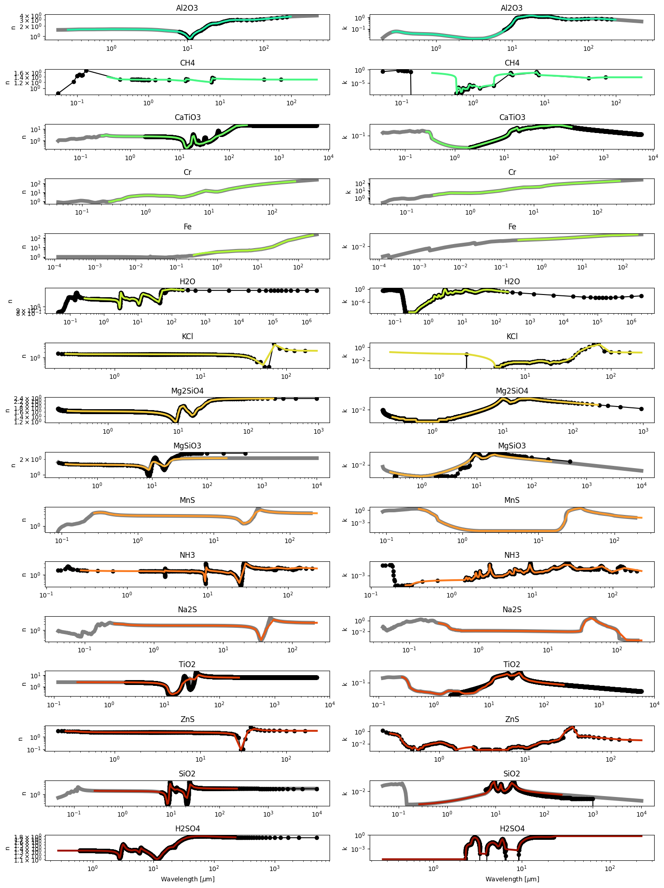

[1]:
import os
import pandas as pd
import glob
import virga.justdoit as jdi
import virga.justplotit as jpi
import virga.ior_factory as ior
jpi.output_notebook()
How to see what optical properties are being used
[2]:
ior_configs = ior.configure_ior_choices()
ior_configs['Na2S']
[2]:
{'inhouse_file': 'Na2S_LXMIE.dat',
'reference': '\\\\cite{Khachai2009Na2S,Montaner1979Sulfur}',
'url': 'https://raw.githubusercontent.com/exoclime/LX-MIE/master/compilation/Na2S.dat',
'usr_note': 'Data source from LX-MIE, Kitzmann & Heng (2018) \\\\cite{Kitzmann2018optical}. ',
'pandas_kwargs': {'sep': '\\s+', 'skiprows': 3, 'names': ['um', 'n', 'k']}}
This allows you to read the raw data file (before it was pre-processed into Virga format like this)
[3]:
na2s = pd.read_csv(ior_configs['Na2S']['url'], **ior_configs['Na2S']['pandas_kwargs'])
na2s.head()
[3]:
| um | n | k | |
|---|---|---|---|
| 0 | 0.041328 | 0.900372 | 0.063904 |
| 1 | 0.041709 | 0.953612 | 0.081016 |
| 2 | 0.042093 | 0.916274 | 0.052723 |
| 3 | 0.042481 | 0.867385 | 0.031485 |
| 4 | 0.042873 | 0.867165 | 0.040997 |
You may see a molecule that does not have a URL that is attached to a data file. In those cases it was likely taken from HITRAN 2020. In those cases you can access it by first downloading and untarring HITRAN 2020 Aersol data at the specified URL:
[4]:
ior_configs['ZnS']['url'] #file to download
[4]:
'https://hitran.org/data/Aerosols/Aerosols-2020/'
[5]:
#point to untarred file
hitran_directory = '/Users/nbatalh1/Documents/data/hitran_ri/'
zns = pd.read_csv(os.path.join(hitran_directory,ior_configs['ZnS']['hitran2020'])
, **ior_configs['ZnS']['pandas_kwargs'])
zns.head()
[5]:
| cm-1 | um | n | k | nerr | kerr | |
|---|---|---|---|---|---|---|
| 0 | 60.0 | 166.67 | 3.008 | 0.036 | 0.010 | 0.036 |
| 1 | 80.0 | 125.00 | 3.029 | 0.049 | 0.010 | 0.049 |
| 2 | 100.0 | 100.00 | 3.058 | 0.063 | 0.011 | 0.059 |
| 3 | 120.0 | 83.33 | 3.097 | 0.079 | 0.012 | 0.061 |
| 4 | 140.0 | 71.43 | 3.150 | 0.098 | 0.013 | 0.063 |
Creating aggregated Index of Refraction (IOR) Files
Thought you can download the optical properties from zenodo, sometimes users may wish to create their own on specified grids. Before you do so you will need to download HITRAN 2020, which is quite small (177 Mb untarred).
Required DOWNLOAD: https://hitran.org/data/Aerosols/Aerosols-2020/
Optional Download: https://github.com/exoclime/LX-MIE
[6]:
hitran_directory = '/Users/nbatalh1/Documents/data/hitran_ri/'
#virga_dir = '/Users/nbatalh1/Documents/data/virga/' #only if you want to compare to old data
#lxmie_dir = '/Users/nbatalh1/Documents/codes/LX-MIE/compilation/' #optional: only if you want to compare to all lxmie data
output_dir = '/Users/nbatalh1/Documents/data/virga_new'#optional to save all new data
fig,ax_fn,ax_fk = ior.create_ior_db(hitran_directory,
output_dir = output_dir)#,
#lxmie_dir=lxmie_dir)
Saving /Users/nbatalh1/Documents/data/virga_new/Al2O3.refrind
Saving /Users/nbatalh1/Documents/data/virga_new/CH4.refrind
Saving /Users/nbatalh1/Documents/data/virga_new/CaTiO3.refrind
Saving /Users/nbatalh1/Documents/data/virga_new/Cr.refrind
Saving /Users/nbatalh1/Documents/data/virga_new/Fe.refrind
Saving /Users/nbatalh1/Documents/data/virga_new/H2O.refrind
Saving /Users/nbatalh1/Documents/data/virga_new/KCl.refrind
Saving /Users/nbatalh1/Documents/data/virga_new/Mg2SiO4.refrind
Saving /Users/nbatalh1/Documents/data/virga_new/MgSiO3.refrind
Saving /Users/nbatalh1/Documents/data/virga_new/MnS.refrind
Saving /Users/nbatalh1/Documents/data/virga_new/NH3.refrind
Saving /Users/nbatalh1/Documents/data/virga_new/Na2S.refrind
Saving /Users/nbatalh1/Documents/data/virga_new/TiO2.refrind
Saving /Users/nbatalh1/Documents/data/virga_new/ZnS.refrind
Saving /Users/nbatalh1/Documents/data/virga_new/SiO2.refrind
Saving /Users/nbatalh1/Documents/data/virga_new/H2SO4.refrind

[7]:
for i in [0,1,5,7,15]: ax_fn[i].set_yscale('linear')
for i in ax_fn: i.set_ylabel('n',fontsize=14)
for i in ax_fk: i.set_ylabel('k',fontsize=14)
ax_fn[-1].set_xlabel(r'Wavelength [$\mu$m]',fontsize=14)
ax_fk[-1].set_xlabel(r'Wavelength [$\mu$m]',fontsize=14)
fig.savefig('/Users/nbatalh1/Documents/research/virga_paper/IOR.png')
Now follow through with new Mie parameters
[8]:
#below 'output_dir' specifies where the new IOR files are, and where you want the new MIE files to go
#in this case I am using the same place
newmie = jdi.calc_mie_db('H2O', output_dir, output_dir, rmin = 1e-8, nradii = 60)
Computing optical properties for H2O using MiePython...
If this function seems to be running a really long time... Check that you gave your rmin (and r_mon if using aggregates) in centimeters and that you are not making tennis balls :)
196 wavelengths of refractive index data found for H2O. Grid of mean radii (in bins) to calculate extinction and scattering efficiencies for (in cm):
min mean max bin width (dr)
8.693417e-09 1.000000e-08 1.130658e-08 2.613167e-09
1.130658e-08 1.300591e-08 1.470525e-08 3.398662e-09
1.470525e-08 1.691538e-08 1.912552e-08 4.420271e-09
1.912552e-08 2.200000e-08 2.487448e-08 5.748967e-09
2.487448e-08 2.861301e-08 3.235154e-08 7.477057e-09
3.235154e-08 3.721384e-08 4.207614e-08 9.724596e-09
4.207614e-08 4.840000e-08 5.472386e-08 1.264773e-08
5.472386e-08 6.294863e-08 7.117339e-08 1.644953e-08
7.117339e-08 8.187044e-08 9.256750e-08 2.139411e-08
9.256750e-08 1.064800e-07 1.203925e-07 2.782500e-08
1.203925e-07 1.384870e-07 1.565815e-07 3.618896e-08
1.565815e-07 1.801150e-07 2.036485e-07 4.706705e-08
2.036485e-07 2.342560e-07 2.648635e-07 6.121500e-08
2.648635e-07 3.046713e-07 3.444792e-07 7.961570e-08
3.444792e-07 3.962530e-07 4.480267e-07 1.035475e-07
4.480267e-07 5.153632e-07 5.826997e-07 1.346730e-07
5.826997e-07 6.702770e-07 7.578542e-07 1.751545e-07
7.578542e-07 8.717565e-07 9.856587e-07 2.278045e-07
9.856587e-07 1.133799e-06 1.281939e-06 2.962806e-07
1.281939e-06 1.474609e-06 1.667279e-06 3.853400e-07
1.667279e-06 1.917864e-06 2.168449e-06 5.011699e-07
2.168449e-06 2.494358e-06 2.820267e-06 6.518173e-07
2.820267e-06 3.244141e-06 3.668015e-06 8.477480e-07
3.668015e-06 4.219301e-06 4.770588e-06 1.102574e-06
4.770588e-06 5.487587e-06 6.204586e-06 1.433998e-06
6.204586e-06 7.137109e-06 8.069632e-06 1.865046e-06
8.069632e-06 9.282463e-06 1.049529e-05 2.425662e-06
1.049529e-05 1.207269e-05 1.365009e-05 3.154796e-06
1.365009e-05 1.570164e-05 1.775319e-05 4.103100e-06
1.775319e-05 2.042142e-05 2.308965e-05 5.336457e-06
2.308965e-05 2.655992e-05 3.003020e-05 6.940551e-06
3.003020e-05 3.454361e-05 3.905702e-05 9.026821e-06
3.905702e-05 4.492712e-05 5.079722e-05 1.174021e-05
5.079722e-05 5.843183e-05 6.606644e-05 1.526921e-05
6.606644e-05 7.599594e-05 8.592544e-05 1.985901e-05
8.592544e-05 9.883967e-05 1.117539e-04 2.582845e-05
1.117539e-04 1.285500e-04 1.453462e-04 3.359226e-05
1.453462e-04 1.671911e-04 1.890360e-04 4.368981e-05
1.890360e-04 2.174473e-04 2.458586e-04 5.682260e-05
2.458586e-04 2.828101e-04 3.197615e-04 7.390298e-05
3.197615e-04 3.678203e-04 4.158791e-04 9.611759e-05
4.158791e-04 4.783840e-04 5.408888e-04 1.250097e-04
5.408888e-04 6.221821e-04 7.034754e-04 1.625866e-04
7.034754e-04 8.092048e-04 9.149341e-04 2.114587e-04
9.149341e-04 1.052445e-03 1.189955e-03 2.750214e-04
1.189955e-03 1.368801e-03 1.547646e-03 3.576904e-04
1.547646e-03 1.780250e-03 2.012855e-03 4.652091e-04
2.012855e-03 2.315379e-03 2.617902e-03 6.050470e-04
2.617902e-03 3.011361e-03 3.404821e-03 7.869190e-04
3.404821e-03 3.916551e-03 4.428281e-03 1.023460e-03
4.428281e-03 5.093833e-03 5.759384e-03 1.331103e-03
5.759384e-03 6.624995e-03 7.490606e-03 1.731222e-03
7.490606e-03 8.616412e-03 9.742218e-03 2.251612e-03
9.742218e-03 1.120643e-02 1.267065e-02 2.928427e-03
1.267065e-02 1.457499e-02 1.647933e-02 3.808688e-03
1.647933e-02 1.895611e-02 2.143288e-02 4.953547e-03
2.143288e-02 2.465415e-02 2.787542e-02 6.442540e-03
2.787542e-02 3.206498e-02 3.625453e-02 8.379113e-03
3.625453e-02 4.170344e-02 4.715234e-02 1.089780e-02
4.715234e-02 5.423913e-02 6.132593e-02 1.417359e-02
Averages from 6 sub-bins will be used to calculate the properties that represent the mean radius in each bin above.
Optical properties for H2O have been calculated and saved as /Users/nbatalh1/Documents/data/virga_new/H2O.mieff.